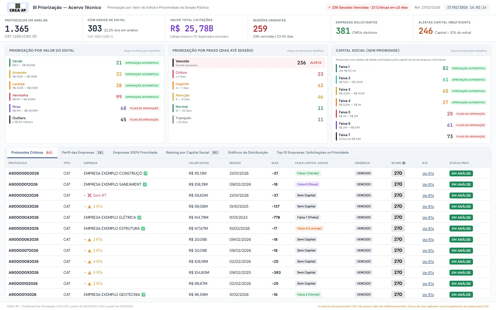
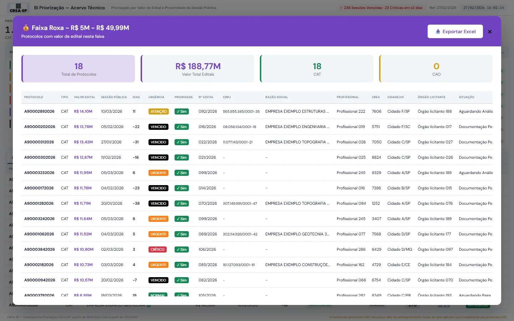
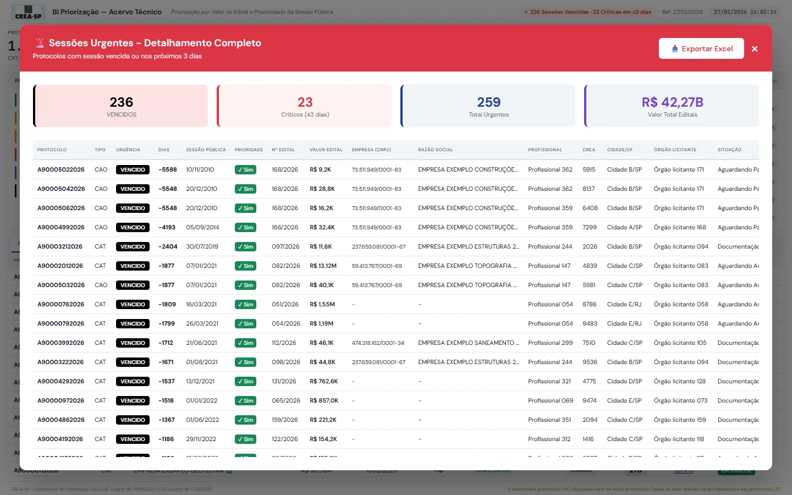
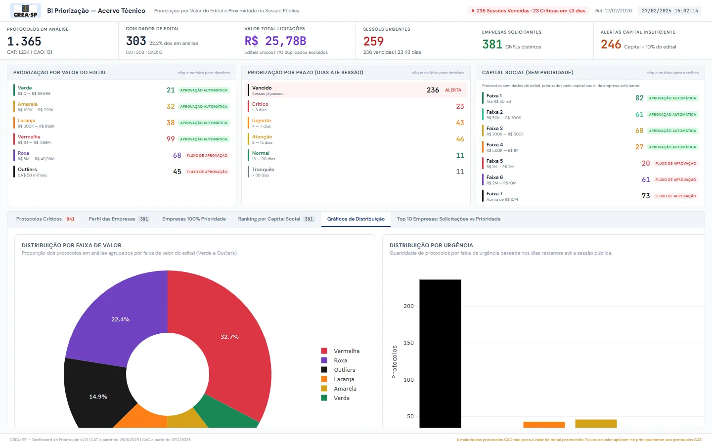
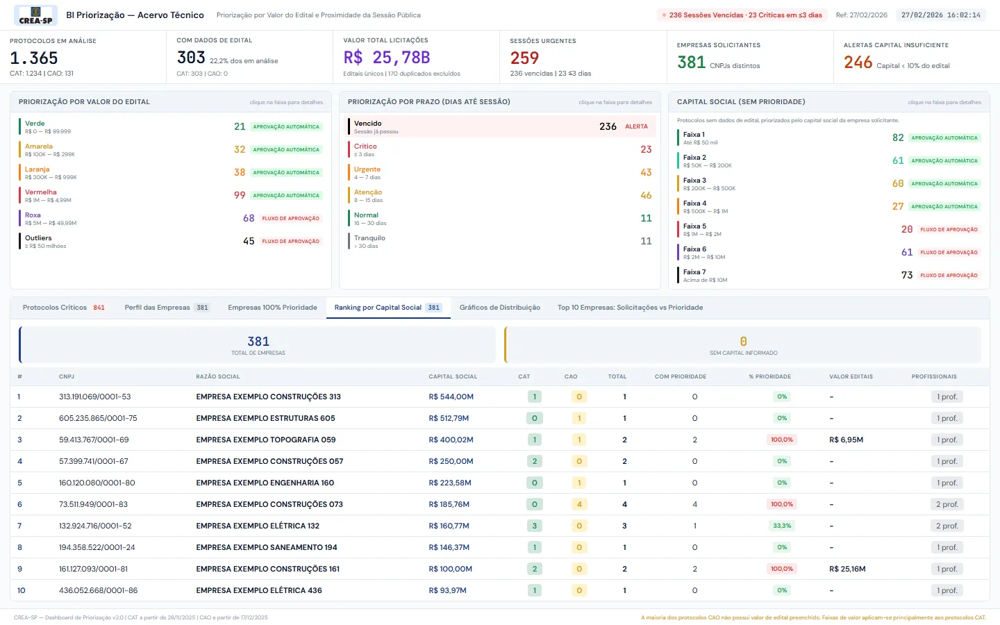

Priorização do Acervo Técnico
Painel que lê os pedidos de certidão de acervo técnico do Crea-SP, cruza com o edital de cada um e ordena a análise pela data da sessão pública e pelo valor da licitação.
- Instituição
- Crea-SP
- Fonte
- DB2 e documentos dos protocolos
- Publicação
- Servidor interno
- Atualização
- Rotina programada
1.365pedidos em análise
R$ 25,8 biem editais
259sessões vencidas ou em até 3 dias
246alertas de capital social
Telas
Tela reproduzida. Indicadores e faixas reais de 27/02/2026; protocolos, empresas, profissionais e órgãos com dados fictícios.










Fluxo de páginas
Topo
Indicadores6 cartões com explicação do cálculo
Quadros
Valor do edital6 faixas
Prazo da sessão6 faixas
Capital social7 faixas
Detalhe
Janela da faixaprotocolos, totais, Excel
Responsáveis técnicoshistórico por empresa
Abas
Protocolos críticos841
Perfil das empresas381
Ranking por capital381
Gráficosfaixas e urgência
Fluxo do processo
Origem
Banco DB2pedidos de certidão CAT e CAO, via JDBC
Edital
Valor e data da sessãoextraídos do XML
Duplicados170 editais contados uma vez
Regras
Faixa de valoraprovação automática até R$ 5 mi
Faixa de prazovencida a mais de 30 dias
Capital socialalerta abaixo de 10% do edital
Escore
0 a 270 pontosurgência, valor, capital
Saída
Página HTMLrotina programada, SFTP para o servidor interno
Escore de priorização
Pedidos por prazo
Protocolos com data de sessão, 27/02/2026
Dias entre a geração do painel e a sessão pública da licitação.
Achados
1.365
pedidos em análise: 1.234 CAT e 131 CAO
22,2%
têm valor de edital preenchido (303); nenhum CAO tem
R$ 25,78 bi
em editais, sem os 170 repetidos
113
pedidos acima de R$ 5 mi vão para aprovação manual
246
alertas de capital social menor que 10% do edital
381
empresas solicitantes (CNPJs distintos)
Tecnologias
DB2JDBCPythonpandasPlotlySFTP